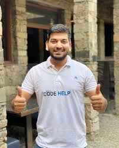

The creator of codehelp
Love Babbar, a graduate from NSUT,Delhi. He is a ex-Software Developer Engineer at Amazon and Microsoft. He studied at NSIT, Delhi. Currently he conquered the fame as a YouTuber for his content on education, interview, placement preparation and programming. He was recommended to join in army recruitment. He completed the google students Challenge Internship, in which he learnt at lot from his mistakes and falls. He came across working with different projects like friendly chat app, sunshine weather app, secure messenger app, progress g tracker, coin runner and more. Currently he is a YouTuber and developer of channel "codehelp", helping many students to achieve their goal.
One of the best teachers in India.
Learn more above Love Babbar and his work: